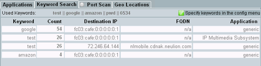
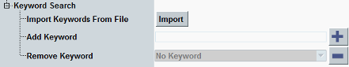
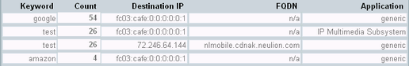

Critical data like passwords, PINs or IMSIs must be kept secret. Only encrypted transmission is allowed for such data. Privacy must be ensured.
To check whether unencrypted transmissions contain critical data, you can use the "Keyword Search" tab.

Use the tab as follows:
While the measurement is off, press the hotkey "Config".
The configuration dialog box opens.
Configure the list of critical keywords that must not appear in unencrypted transmissions.
For details, see "Keyword settings".
Your current list of keywords is listed at the top of the "Keyword Search" tab, as "Used Keywords".
Start the measurement.
Generate the traffic that you want to search for keywords.
If a keyword is found in an unencrypted transmission, the keyword is listed in the result table together with connection information.
For further analysis, you can create log files with the IP logging application of the DAU and analyze them with Wireshark. See also "IP Logging Tab".
The settings and the result table are described in the following.
Open the configuration dialog box via the hotkey "Config", while the measurement is off.
The relevant settings are contained in the node "Keyword Search".

Imports a list of keywords from a text file. The text file must contain one entry per line. The entire lines are imported, including leading and trailing spaces.
Already existing entries are removed and replaced by the imported keywords.
Store your keyword files in the directory ip_analysis of the samba share.
Remote command:Adds an entry to the keyword list. Enter the keyword and press the "+" button or the [ENTER] key.
Remote command:Removes an entry from the list. Select the entry and press the "-" button.
Remote command:The result table contains one line for each keyword found in unencrypted transmissions. Both traffic directions are searched (from the Internet to the DUT and vice versa). The results do not distinguish between the two directions.

- "Keyword": found keyword
- "Count": how often the keyword was found
- "Destination IP": IP address of the destination
- "FQDN": FQDN of the destination
- "Application": application using the connection